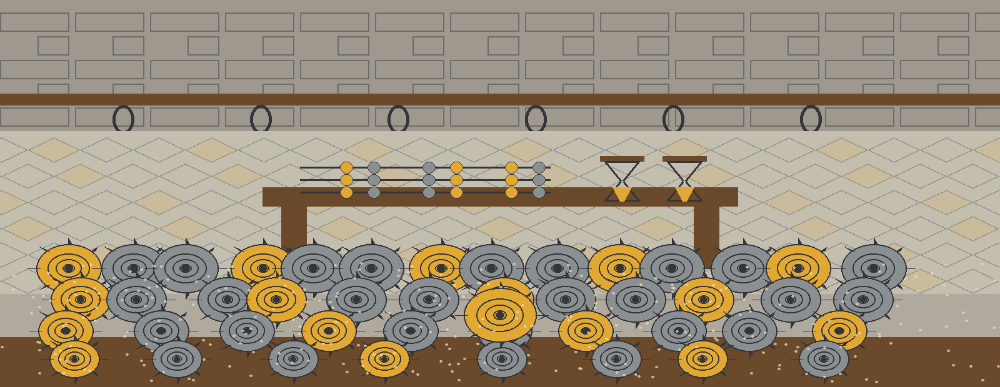
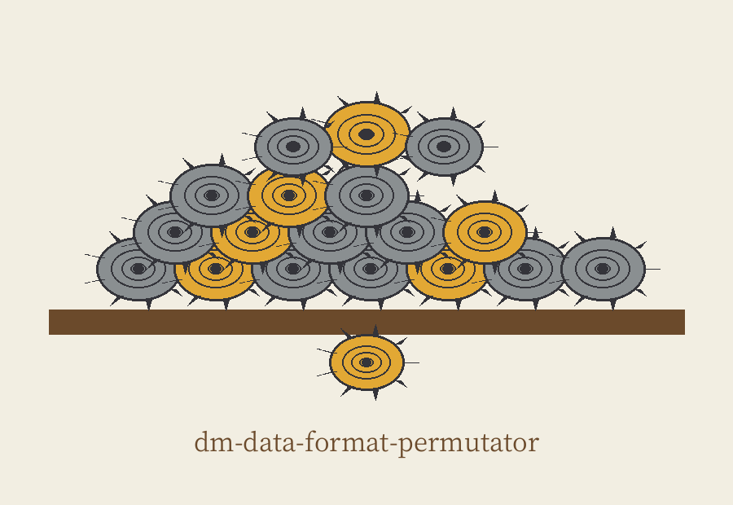
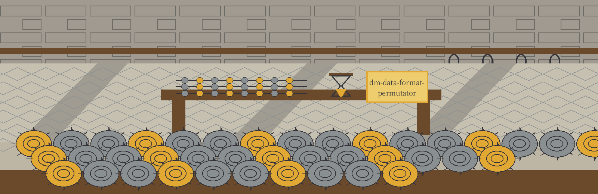
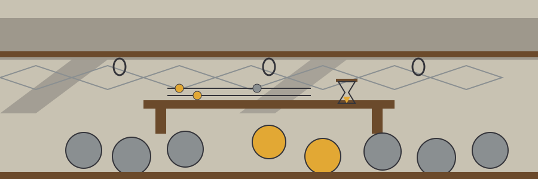

dm-data-format-permutator: The Phoenician Purple Dye Works
Wherever this site gives its own name, it uses the joined form dm-data-format-permutator: The Phoenician Purple Dye Works, repo first, theme second. The page is a yard ledger walked bench by bench.



Faker Locale
The Output Is Never the Input
A Run That Replaces Nothing Fails
Bench one: the job
The program permutes the format of data inside one column at random while keeping what the values are underneath: date shapes stay date like, currency shapes stay currency like, telephone shapes stay telephone like. It takes a CSV file and a column name as its input. The tool belongs with programs that generate or mask sensitive data with values that look realistic while meaning nothing.
Bench two: fetching, with one honest repair
git clone https://github.com/ShadowGuard-AI/dm-data-format-permutator
The line above is labelled a mend. The address printed in the README belongs to an older house, a predecessor name, and anyone following it literally would knock at the wrong door. The mended line gives the organisation name with its hyphen, as it should. Nothing about the mend is passed off as the original wording.
Bench three: the shape of an invocation
./dm-data-format-permutator [params]
That shape is all the source ever gives: executable first and bracketed parameters trailing behind it. Around it this plate leaves considered emptiness: no CSV taken from any work, no column lifted from any table, and no cell value of any kind.
Bench four: the controls in README order
Help first, the flag -h, which prints the help message and exits. CSV file next, positional, the file to process. Column name next, positional, the column whose formats are permuted. Output next, -o, the output CSV file, with its printed default: the input name carrying a masked suffix before the extension, in the pattern the README gives as <input_file>_masked.csv. Locale last, -l, the Faker locale, with printed examples given as locale codes only, en_US and fr_FR, and a printed default of en_US.
Bench five: the order of work
The input is read and validated before the output file is opened. A run that fails at that stage, for a missing column, an empty input, or an input that cannot be decoded, creates no output file at all. Failure leaves no partial file behind.
Bench six: the guard on the input file
The output may not be the input. If the resolved output path lands on the input, by the same spelling or through a symlink, the run refuses at exit 1 before any file is opened, and the input stays untouched.
Bench seven: the count
The run counts the cells it truly replaces in the named column. If no cell was replaced, as with a column of dates that do not parse, the run prints the sentence the README quotes, No values were permuted., then exits 1 and writes no output file. No sample cell is printed on this plate or anywhere on this site.
Bench eight: two licence facts, kept apart
First and separate stands the file in the repository itself: MIT License, its holder conveyed only by shape: a pen name first, a bracketed given name shortened to a lone initial second, the handle last. The wording of that line is not reproduced and the initial is not opened.
Second, and labelled a site correction in so many words: the README closing line respelled with the current hyphenated organisation where the published line used the predecessor name reads: Copyright (c) ShadowGuard-AI. Site correction.
The preserved README record
 # dm-data-format-permutator Randomly permutes the format of data within a column while preserving its inherent characteristics (e.g., date formats, currency formats, telephone number formats). Takes a CSV file and a column name as input. - Focused on Tools designed to generate or mask sensitive data with realistic-looking but meaningless values ## Install `git clone https://github.com/ShadowStrikeHQ/dm-data-format-permutator` ## Usage `./dm-data-format-permutator [params]` ## Parameters - `-h`: Show help message and exit - `csv_file`: The CSV file to process (positional). - `column_name`: The name of the column to permute (positional). - `-o`: The output CSV file (default: <input_file>_masked.csv). - `-l`: Faker locale (e.g., en_US, fr_FR). Defaults to en_US. ## Behavior notes - The input is read and validated before the output file is opened. A run that fails, for example a missing column, an empty input, or an undecodable input, creates no output file. - The output file may not be the input file. If the resolved output path is the input file, by the same spelling or through a symlink, the run refuses at exit 1 before any file is opened and the input is left untouched. - The run counts the cells it actually replaces in the named column. If no cell was replaced, for example a column of dates that do not parse, the run prints "No values were permuted.", exits 1, and writes no output file. ## License Copyright (c) ShadowStrikeHQ